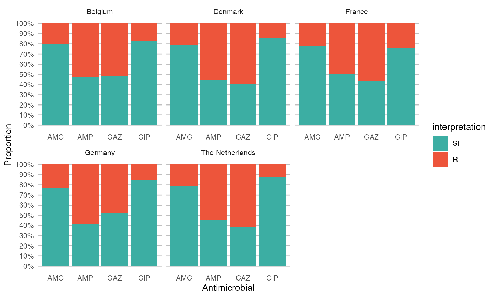

This tutorial assumes you already imported the WHONET data with e.g. the readxl package. In RStudio, this can be done using the menu button ‘Import Dataset’ in the tab ‘Environment’. Choose the option ‘From Excel’ and select your exported file. Make sure date fields are imported correctly.
An example syntax could look like this:
library(readxl)
data <- read_excel(path = "path/to/your/file.xlsx")This package comes with an example data set WHONET. We will use it for this analysis.
First, load the relevant packages if you did not yet did this. I use the tidyverse for all of my analyses. All of them. If you don’t know it yet, I suggest you read about it on their website: https://www.tidyverse.org/.
library(dplyr) # part of tidyverse
library(ggplot2) # part of tidyverse
library(AMR) # this package
library(cleaner) # to create frequency tablesWe will have to transform some variables to simplify and automate the analysis:
mo) using our Catalogue of Life reference data set, which contains all ~70,000 microorganisms from the taxonomic kingdoms Bacteria, Fungi and Protozoa. We do the tranformation with as.mo(). This function also recognises almost all WHONET abbreviations of microorganisms."S", "I" or "R". That is exactly where the as.rsi() function is for.
# transform variables
data <- WHONET %>%
# get microbial ID based on given organism
mutate(mo = as.mo(Organism)) %>%
# transform everything from "AMP_ND10" to "CIP_EE" to the new `rsi` class
mutate_at(vars(AMP_ND10:CIP_EE), as.rsi)No errors or warnings, so all values are transformed succesfully.
We also created a package dedicated to data cleaning and checking, called the cleaner package. Its freq() function can be used to create frequency tables.
So let’s check our data, with a couple of frequency tables:
# our newly created `mo` variable, put in the mo_name() function
data %>% freq(mo_name(mo), nmax = 10)Frequency table
Class: character
Length: 500
Available: 500 (100.0%, NA: 0 = 0.0%)
Unique: 37
Shortest: 11
Longest: 40
| Item | Count | Percent | Cum. Count | Cum. Percent | |
|---|---|---|---|---|---|
| 1 | Escherichia coli | 245 | 49.0% | 245 | 49.0% |
| 2 | Coagulase-negative Staphylococcus (CoNS) | 74 | 14.8% | 319 | 63.8% |
| 3 | Staphylococcus epidermidis | 38 | 7.6% | 357 | 71.4% |
| 4 | Streptococcus pneumoniae | 31 | 6.2% | 388 | 77.6% |
| 5 | Staphylococcus hominis | 21 | 4.2% | 409 | 81.8% |
| 6 | Proteus mirabilis | 9 | 1.8% | 418 | 83.6% |
| 7 | Enterococcus faecium | 8 | 1.6% | 426 | 85.2% |
| 8 | Staphylococcus capitis | 8 | 1.6% | 434 | 86.8% |
| 9 | Enterobacter cloacae | 5 | 1.0% | 439 | 87.8% |
| 10 | Streptococcus anginosus | 5 | 1.0% | 444 | 88.8% |
(omitted 27 entries, n = 56 [11.20%])
# our transformed antibiotic columns
# amoxicillin/clavulanic acid (J01CR02) as an example
data %>% freq(AMC_ND2)Frequency table
Class: factor > ordered > rsi (numeric)
Length: 500
Levels: 3: S < I < R
Available: 481 (96.2%, NA: 19 = 3.8%)
Unique: 3
Drug: Amoxicillin/clavulanic acid (AMC, J01CR02)
Drug group: Beta-lactams/penicillins
%SI: 78.59%
| Item | Count | Percent | Cum. Count | Cum. Percent | |
|---|---|---|---|---|---|
| 1 | S | 356 | 74.01% | 356 | 74.01% |
| 2 | R | 103 | 21.41% | 459 | 95.43% |
| 3 | I | 22 | 4.57% | 481 | 100.00% |
An easy ggplot will already give a lot of information, using the included ggplot_rsi() function:
data %>%
group_by(Country) %>%
select(Country, AMP_ND2, AMC_ED20, CAZ_ED10, CIP_ED5) %>%
ggplot_rsi(translate_ab = 'ab', facet = "Country", datalabels = FALSE)